2d scatter plot of cytometry data with ggplot2
Mike Jiang
04/13/2015
Source:vignettes/advanced/ggplot.flowSet.2d.Rmd
ggplot.flowSet.2d.Rmdggcyto makes ggplot2 to be able to work with Cytometry data, namely flowSet/ncdfFlowSet or flowFrame S4 objects.
library(ggcyto)
data(GvHD)
fs <- GvHD[subset(pData(GvHD), Patient %in%5:7 & Visit %in% c(5:6))[["name"]]]
fr <- fs[[1]]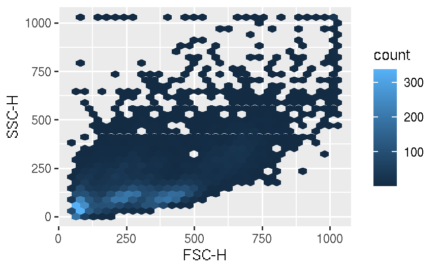
# change the smooth color
myColor <- rev(RColorBrewer::brewer.pal(11, "Spectral"))
myColor_scale_fill <- scale_fill_gradientn(colours = myColor)
p + myColor_scale_fill + stat_binhex()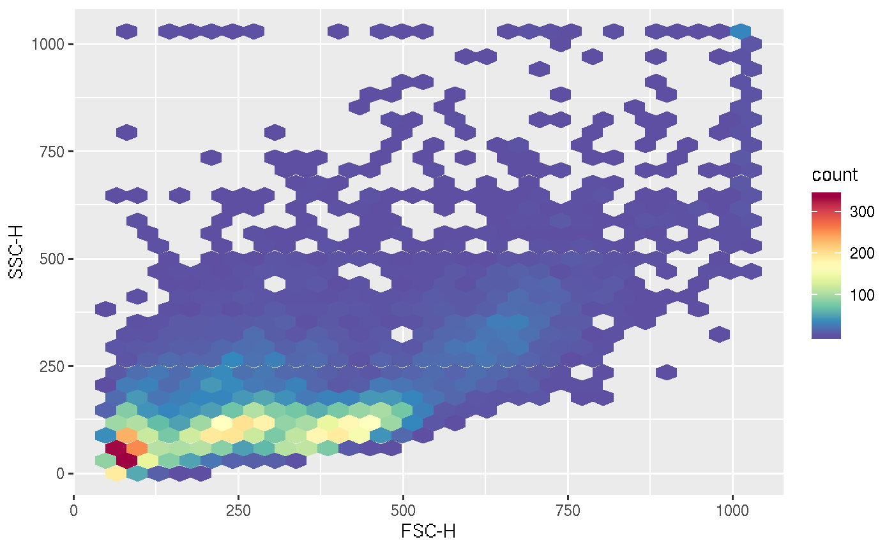
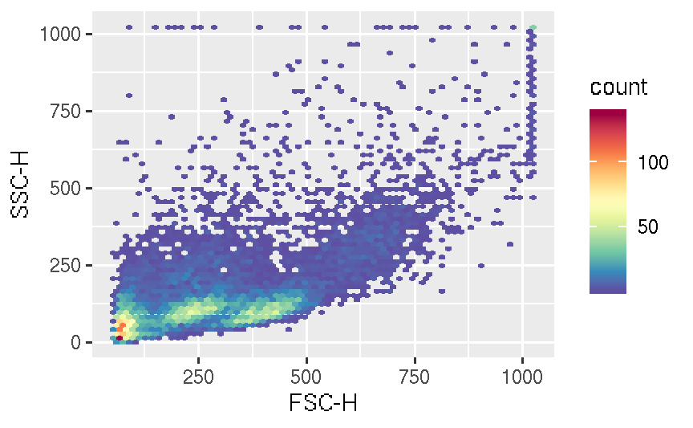
# sqr trans binned color
myColor_scale_fill_sqrt <- scale_fill_gradientn(colours = myColor, trans = "sqrt")
p1 <- p + myColor_scale_fill_sqrt + stat_binhex(bins = 64)
p1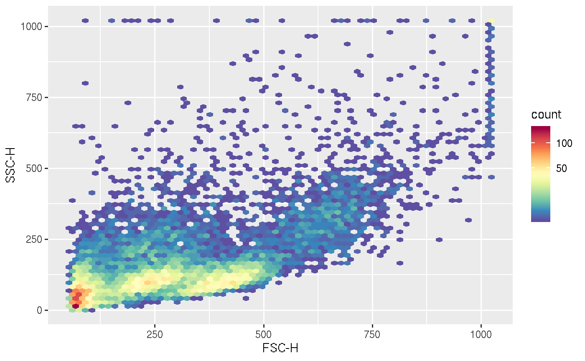

# add contour
p <- p + myColor_scale_fill
p + stat_binhex(bins = 64) + geom_density2d(colour = "black")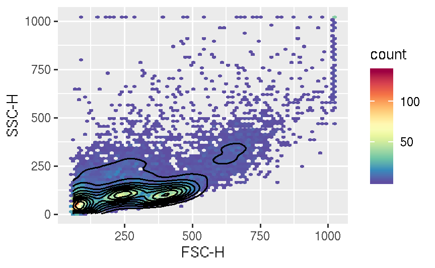
# non-binned dot plot
df <- fortify(fr)
cols <- densCols(df[,`FSC-H`], df[,`SSC-H`], colramp = flowViz::flowViz.par.get("argcolramp"))
p1 <- ggplot(df, aes(x = `FSC-H`, y = `SSC-H`))
p1 + geom_point(color = cols) 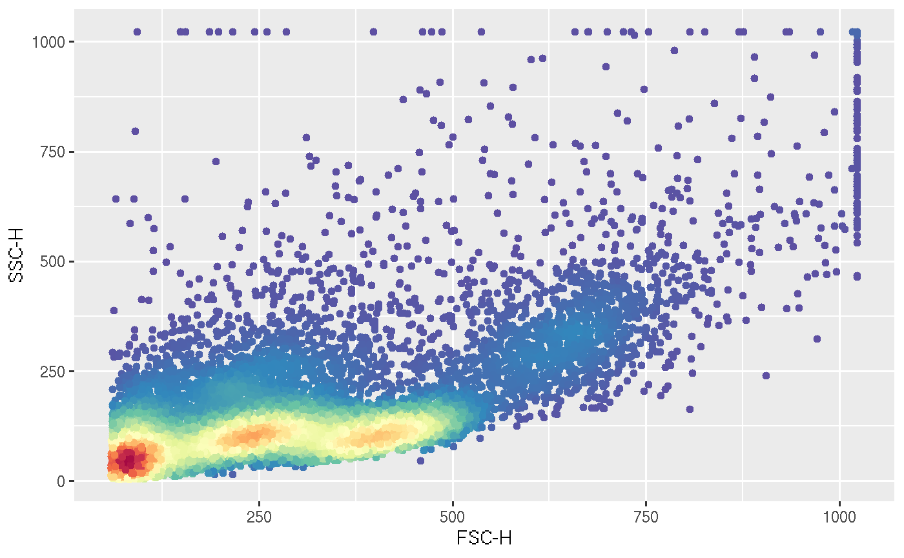
# multiple samples
p1 <- ggplot(mapping = aes(x = `FSC-H`, y = `SSC-H`)) + myColor_scale_fill + facet_grid(Patient~Visit)
p1 + stat_binhex(data = fs, bins = 64)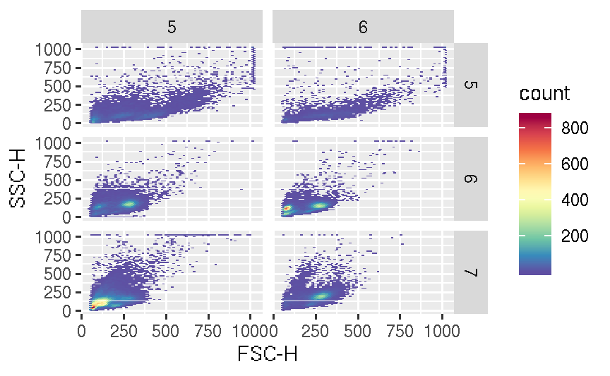
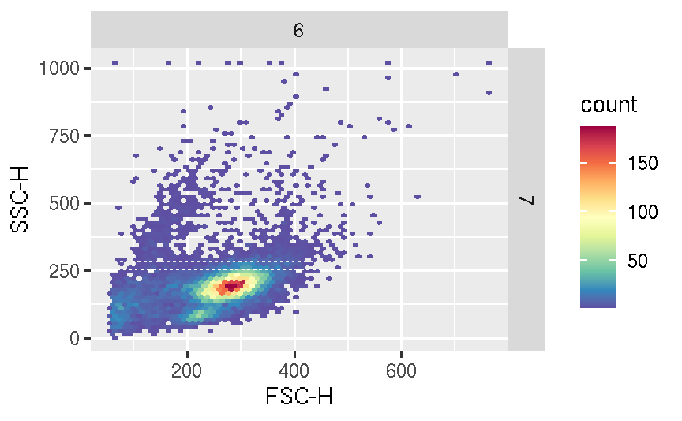
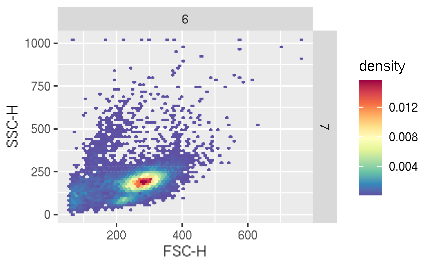
# the color scale difference is reduced
p1 + stat_binhex(data = fs, bins = 64, aes(fill = ..density..))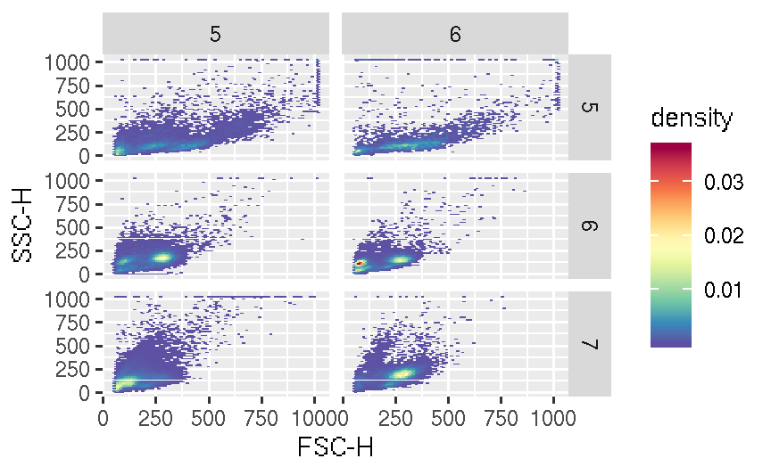
# non-binned dot plot
df <- fortify(fr)
cols <- densCols(df[,`FSC-H`], df[,`SSC-H`], colramp = flowViz::flowViz.par.get("argcolramp"))
p <- ggplot(df, aes(x = `FSC-H`, y = `SSC-H`))
p + geom_point(color = cols) 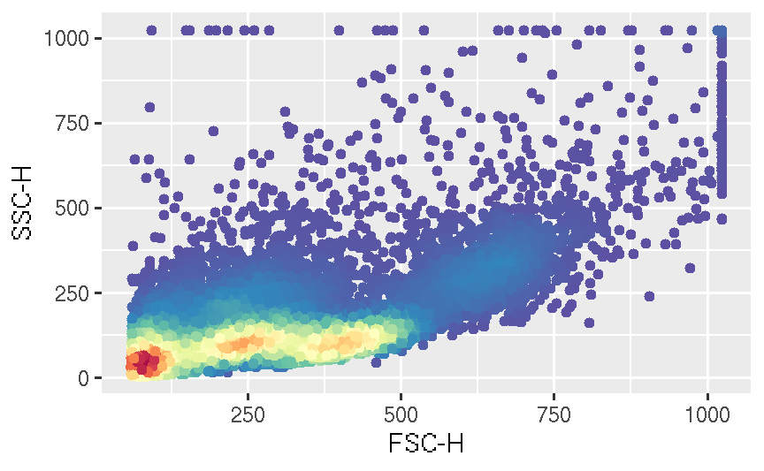